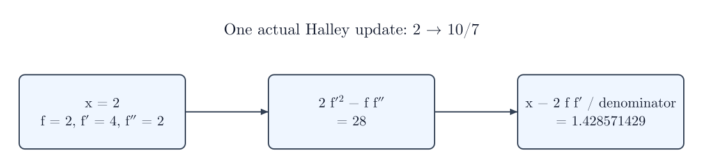
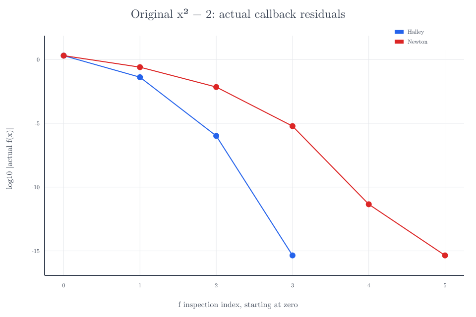
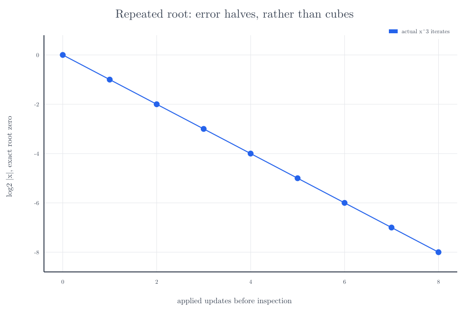
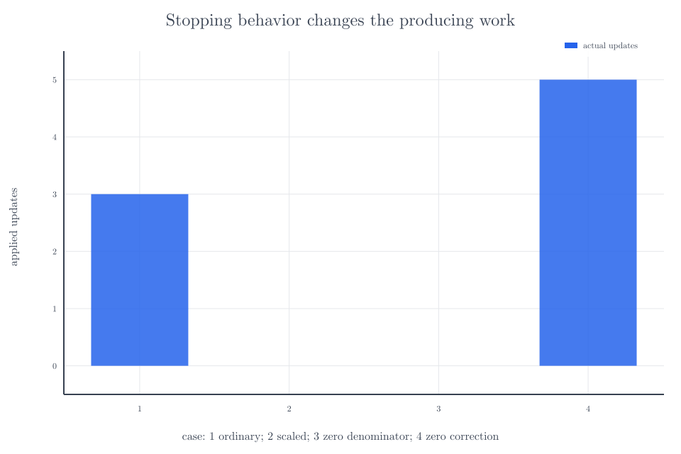

Halley root finding: a rational step and its limits
Abstract
Given a scalar function and its first two derivatives, find an input where the function is zero. Derivative information can accelerate a nearby search, but an unbracketed iteration can stall or fail, and a small residual need not mean small coordinate error. This report derives Halley's rational update, follows actual core callback records for the original square-root-of-two example, compares producing Newton evaluations, and tests repeated roots and numerical stopping controls. Cubic convergence is a local mathematical property, rather than a promise of three times as many correct digits at every floating step.
Check the first step by hand
For \(f(x)=x^2-2\) from x=2, the actual values are f=2, f′=4 and f″=2. The denominator is 2·4²−2·2=28, so the correction is 16/28=4/7 and the next iterate is 10/7. Its exact residual is 2/49. The following complete program takes that update through the shared core; its second inspection evaluates the resulting rounded iterate. The legacy iteration count is one here because the update budget is one, while two calls to f are needed to check the final result.
#include <dm/dm.hpp>
int main() {
std::filesystem::create_directories("build");
auto f = [](double x) { return x * x - 2.; };
auto df = [](double x) { return 2 * x; };
auto d2 = [](double) { return 2.; };
const auto t = dm::algorithms::halley_trace(f, df, d2, 2., 1e-10, 1);
const auto &a = t.steps.at(0);
std::print("| inspection | x | f(x) | derivatives evaluated | next | update |\n| ---: | ---: | ---: | " "--- | ---: | --- |\n");
for (const auto &v : t.steps)
std::print("| {} | {:.17g} | {:.17g} | {} | {:.17g} | {} |\n",
v.inspection, v.x, v.fx, v.derivatives_evaluated, v.next,
v.updated);
std::print("\nActual denominator {}; f calls {}; updates {}; legacy iterations {}; converged {}.\n",
a.denominator, t.run.work.f_calls, t.run.work.updates,
t.run.result.iterations, t.run.result.converged);
dm::graphics::Diagram diagram(65, 1100);
dm::graphics::DiagramNodeStyle style;
style.width = 4;
style.height = 1.8;
style.font_size = 22;
diagram.node("values", {0, 0},
std::format("x = {}\nf = {}, f′ = {}, f″ = {}", a.x, a.fx,
a.derivative, a.second_derivative), style).node(
"denominator", {6, 0}, std::format("2 f′² − f f″\n= {}", a.denominator),
style).node("next", {12, 0},
std::format("x − 2 f f′ / denominator\n= {:.9f}", a.next),
style).edge("values", "denominator").edge("denominator",
"next").text(
{6, 2}, "One actual Halley update: 2 → 10/7", 25).save_svg(
"build/halley_step.svg");
if (a.denominator != 28 || a.next != 2. - 16. / 28 ||
t.run.work.f_calls != 2)
throw std::runtime_error("first step");
}| inspection | x | f(x) | derivatives evaluated | next | update |
|---|---|---|---|---|---|
| 1 | 2 | 2 | true | 1.4285714285714286 | true |
| 2 | 1.4285714285714286 | 0.04081632653061229 | false | 1.4285714285714286 | false |
Actual denominator 28; f calls 2; updates 1; legacy iterations 1; converged false.

Derive the rational update and its local order
At a current point x, let t be a proposed displacement and match f, f′ and f″ with the rational function
Its Taylor coefficients through t² agree with those of f(x+t). Setting its numerator to zero gives
The rational construction assumes f′≠0. The implemented algebraic formula can still be evaluated with f′=0 and a nonzero denominator, in which case it applies a zero correction and can stall. There is no bracketing safeguard or automatic Newton fallback.
For a sufficiently smooth simple root α, expand f, f′ and f″ at α and substitute into that quotient. The constant and linear terms cancel in the next error, as does its quadratic term. With e=x−α,
For x²−2 the exact maps simplify further. With r=√2,
These identities explain the local orders without fitting a line to a few rounded observations. They do not make derivative evaluation free, prove convergence from an arbitrary start, or overcome floating cancellation.
Run the original square-root comparison
Both solvers start at two and use their actual residual stopping rule with tolerance 1e−15. The Newton curve records inputs to its real f callback, rather than running a second version of Newton's formula. Halley's curve uses the producing core trace. The plotted quantity is the actual absolute callback residual; values of exactly zero would be omitted from the log plot and printed in the table, without an invented plotting floor. Residual is in function units, and near a simple root it approximates coordinate error multiplied by f′(α).
#include <dm/dm.hpp>
int main() {
std::filesystem::create_directories("build");
auto f = [](double x) { return x * x - 2.; };
auto df = [](double x) { return 2 * x; };
auto d2 = [](double) { return 2.; };
const auto h = dm::algorithms::halley_trace(f, df, d2, 2., 1e-15, 20);
std::vector<double> hx, hy, nx, ny;
std::size_t nf = 0, nd = 0;
std::print("| method | f inspection | x | actual absolute residual |\n| --- | ---: | ---: | ---: |\n");
for (const auto &a : h.steps) {
std::print("| Halley | {} | {:.17g} | {:.17g} |\n", a.inspection, a.x,
std::abs(a.fx));
if (a.fx != 0) {
hx.push_back(a.inspection - 1);
hy.push_back(std::log10(std::abs(a.fx)));
}
}
auto n = dm::algorithms::newton_raphson([&](double x) {
auto y =
f(x); std::print("| Newton | {} | {:.17g} | {:.17g} |\n", nf + 1, x,
std::abs(y)); if (y != 0) {
nx.push_back(nf); ny.push_back(std::log10(std::abs(y)));
}
++ nf; return y;
}, [&](double x) {
++nd; return df(x);
}, 2., 1e-15, 20);
std::print("\nHalley converged {}; legacy iterations {}; applied updates {}; f/df/d2f calls {}/{}/{}. " "Newton converged {}; legacy iterations {}; f/df calls {}/{}.\n",
h.run.result.converged, h.run.result.iterations,
h.run.work.updates, h.run.work.f_calls, h.run.work.df_calls,
h.run.work.d2f_calls, n.converged, n.iterations, nf, nd);
auto plot = dm::graphics::RPlot::create();
plot.line(hx, hy, "Halley", {37, 99, 235}, 2.).points(hx, hy, "",
{37, 99, 235}, 6.).line(nx, ny, "Newton", {220, 38, 38}, 2.).points(nx, ny, "", {220, 38, 38}, 6.).title("Original x² − 2: actual callback residuals").x_label("f inspection index, starting at zero").y_label("log10 |actual f(x)|").save_svg("build/halley_original.svg");
if (!h.run.result.converged || !n.converged)
throw std::runtime_error("original convergence");
}| method | f inspection | x | actual absolute residual |
|---|---|---|---|
| Halley | 1 | 2 | 2 |
| Halley | 2 | 1.4285714285714286 | 0.04081632653061229 |
| Halley | 3 | 1.4142139267767408 | 1.0306892890277197e-06 |
| Halley | 4 | 1.4142135623730949 | 4.4408920985006262e-16 |
| Newton | 1 | 2 | 2 |
| Newton | 2 | 1.5 | 0.25 |
| Newton | 3 | 1.4166666666666667 | 0.0069444444444446418 |
| Newton | 4 | 1.4142156862745099 | 6.0073048828712672e-06 |
| Newton | 5 | 1.4142135623746899 | 4.510614104447086e-12 |
| Newton | 6 | 1.4142135623730951 | 4.4408920985006262e-16 |
Halley converged true; legacy iterations 4; applied updates 3; f/df/d2f calls 4/3/3. Newton converged true; legacy iterations 6; f/df calls 6/5.

A repeated root changes the order
Simple-root assumptions matter. For \(f(x)=x^m\), direct substitution gives
For m=3 the factor is one half. Starting at one gives exactly representable dyadic iterates for the short run below. Tolerance zero disables strict residual acceptance, so this block executes the requested eight updates and includes a ninth, final f inspection. It establishes linear contraction for this example, rather than an empirical general convergence theorem.
#include <dm/dm.hpp>
int main() {
std::filesystem::create_directories("build");
auto f = [](double x) { return x * x - 2.; };
auto df = [](double x) { return 2 * x; };
auto d2 = [](double) { return 2.; };
const auto t = dm::algorithms::halley_trace([](double x) {
return x * x * x;
}, [](double x) {
return 3 * x * x;
}, [](double x) {
return 6 * x;
}, 1., 0., 8);
std::vector<double> x, y;
std::print("| inspection | iterate | residual | updated |\n| ---: | ---: | ---: | --- |\n");
for (const auto &a : t.steps) {
std::print("| {} | {:.12g} | {:.12g} | {} |\n", a.inspection, a.x, a.fx,
a.updated);
x.push_back(a.inspection - 1);
y.push_back(std::log2(std::abs(a.x)));
if (a.x != std::ldexp(1., 1 - a.inspection))
throw std::runtime_error("multiplicity contraction");
}
std::print("\nActual updates {}; f calls {}; converged {}.\n",
t.run.work.updates, t.run.work.f_calls, t.run.result.converged);
auto plot = dm::graphics::RPlot::create();
plot.line(x, y, "actual x^3 iterates", {37, 99, 235}, 2.).points(
x, y, "", {37, 99, 235}, 6.).title("Repeated root: error halves, rather than cubes").x_label("applied updates before inspection").y_label("log2 |x|, exact root zero").save_svg("build/halley_multiple.svg");
}| inspection | iterate | residual | updated |
|---|---|---|---|
| 1 | 1 | 1 | true |
| 2 | 0.5 | 0.125 | true |
| 3 | 0.25 | 0.015625 | true |
| 4 | 0.125 | 0.001953125 | true |
| 5 | 0.0625 | 0.000244140625 | true |
| 6 | 0.03125 | 3.0517578125e-05 | true |
| 7 | 0.015625 | 3.81469726562e-06 | true |
| 8 | 0.0078125 | 4.76837158203e-07 | true |
| 9 | 0.00390625 | 5.96046447754e-08 | false |
Actual updates 8; f calls 9; converged false.

Stop reasons, scaling and limits
A residual tolerance has function units. Multiplying f and both derivatives by a constant leaves the exact Halley correction unchanged, but changes an absolute residual test; floating products can also underflow or overflow. The next block shows that a sufficiently small function scale accepts the initial x=2 even though it is far from √2. It also contrasts an exactly zero denominator with a nonzero denominator that produces zero corrections repeatedly.
#include <dm/dm.hpp>
int main() {
std::filesystem::create_directories("build");
auto f = [](double x) { return x * x - 2.; };
auto df = [](double x) { return 2 * x; };
auto d2 = [](double) { return 2.; };
std::vector<double> cases, updates;
std::print("| case | root estimate | residual | converged | stop enum | updates | f calls |\n| --- | " "---: | ---: | --- | ---: | ---: | ---: |\n");
const std::vector<dm::algorithms::HalleyRun> runs{dm::algorithms::halley_run(f, df, d2, 2.), dm::algorithms::halley_run([&](double x) {
return 1e-12 * f(x);
}, [&](double x) {
return 1e-12 * df(x);
}, [](double) {
return 2e-12;
}, 2.), dm::algorithms::halley_run([](double) {
return 1.;
}, [](double) {
return 0.;
}, [](double) {
return 0.;
}, 0.), dm::algorithms::halley_run([](double) {
return 1.;
}, [](double) {
return 0.;
}, [](double) {
return 2.;
}, 0., 1e-10, 5)};
const std::vector<std::string> names{"ordinary", "scaled",
"zero denominator", "zero correction"};
for (std::size_t i = 0; i < runs.size(); ++i) {
const auto &r = runs[i];
std::print("| {} | {:.12g} | {:.12g} | {} | {} | {} | {} |\n", names[i],
r.result.root, r.result.residual, r.result.converged,
int(r.stop), r.work.updates, r.work.f_calls);
cases.push_back(i + 1);
updates.push_back(r.work.updates);
}
int calls = 0;
bool rejected = false;
try {
(void) dm::algorithms::halley_trace([&](double x) {
++calls; return f(x);
}, df, d2, 2., 1e-10, 100, 1);
} catch (const std::length_error &) {
rejected = true;
}
std::print("\nOnline cap one rejects before second f callback: {}; actual f calls before rejection " "{}.\n",
rejected, calls);
if (!rejected || calls != 1 || runs[1].result.root != 2 ||
!runs[1].result.converged || runs[3].work.updates != 5)
throw std::runtime_error("controls");
auto plot = dm::graphics::RPlot::create();
plot.bars(cases, updates, "actual updates", {37, 99, 235}, .65).title(
"Stopping behavior changes the producing work").x_label(
"case: 1 ordinary; 2 scaled; 3 zero denominator; 4 zero correction").y_label("applied updates").save_svg("build/halley_controls.svg");
}| case | root estimate | residual | converged | stop enum | updates | f calls |
|---|---|---|---|---|---|---|
| ordinary | 1.41421356237 | 4.4408920985e-16 | true | 0 | 3 | 4 |
| scaled | 2 | 2e-12 | true | 0 | 0 | 1 |
| zero denominator | 0 | 1 | false | 1 | 0 | 1 |
| zero correction | 0 | 1 | false | 2 | 5 | 6 |
Online cap one rejects before second f callback: true; actual f calls before rejection 1.

All callbacks and controls are validated before execution: callables must be nonempty, x0 finite, tolerance finite and nonnegative, and the nonnegative update budget below INT_MAX. Nonfinite callback output throws a domain error; nonfinite denominator or correction arithmetic throws an overflow error. Callback exceptions propagate. These checks improve failure handling without changing the ordinary legacy update arithmetic. There is no claim that finite arithmetic proves the supplied derivatives correct.
The legacy iterations field counts loop inspections, including a successful
initial residual check. With budget zero it stays zero, although f is evaluated
once. A zero denominator returns without an update. Budget exhaustion evaluates
f at the last updated x, and may still set converged if its strict residual
passes. With tolerance zero even a zero callback value fails that strict test.
There is no stagnation stop.
halley_run adds exact selected callback/update counts; halley_trace captures
those same inspected values and decisions from one execution. It admits one
whole record before each f callback. The default online cap is one million
records, zero disabling the policy cap; it is not bytes or peak memory. Failure
returns no partial trace, but earlier callback side effects remain. Initial
inputs, derivative outputs and next iterates are owned values with no retained
callable references. Calls share no internal mutable state.
For K updates that reach the budget check, there are K+1 f calls and K calls to each derivative. Earlier residual or denominator stops can reduce those counts. Runtime includes callback costs plus O(K) scalar arithmetic. The untraced solver uses constant working storage; a trace adds one owned record per f call. The extra derivative prevents inferring a runtime win from a shorter iteration sequence alone.
What this establishes
The original square-root example demonstrates fast local progress from a favourable start. The exact error identities explain its cubic order without invented error floors. The repeated-root control proves why the simple-root condition matters, and the stopping controls distinguish a small function value from an accurate coordinate. A dataset would not strengthen this scalar numerical example.
The historical primary reference is Edmond Halley (1694), [A new, exact, and easy method of finding the roots of equations generally, and that without any previous reduction](https://doi.org/10.1098/rstl.1694.0029), Philosophical Transactions 18, 136–148. This report gives a modern rational-interpolation derivation and explicitly describes the library's residual and update-budget policy.
Verification compares finite legacy results with a frozen pre-conversion implementation, certifies actual callback order and trace records under sanitizers, and uses independent high-precision arithmetic for square-root updates and exact dyadic identities for the repeated-root sequence. API examples, language-server descriptions, every complete report program and both exports are checked before retiring the original report.